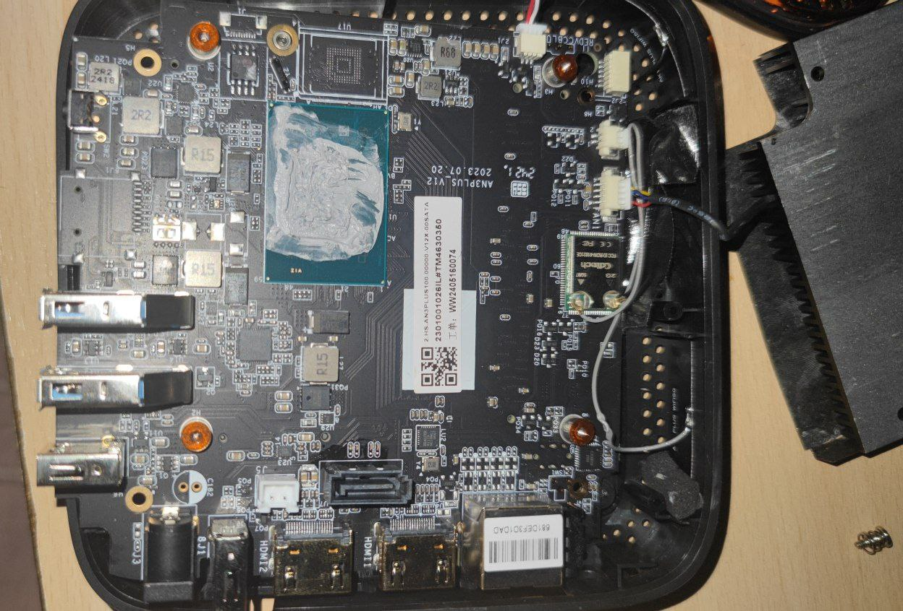
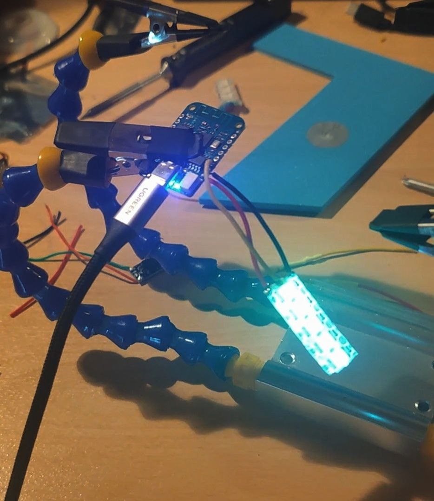
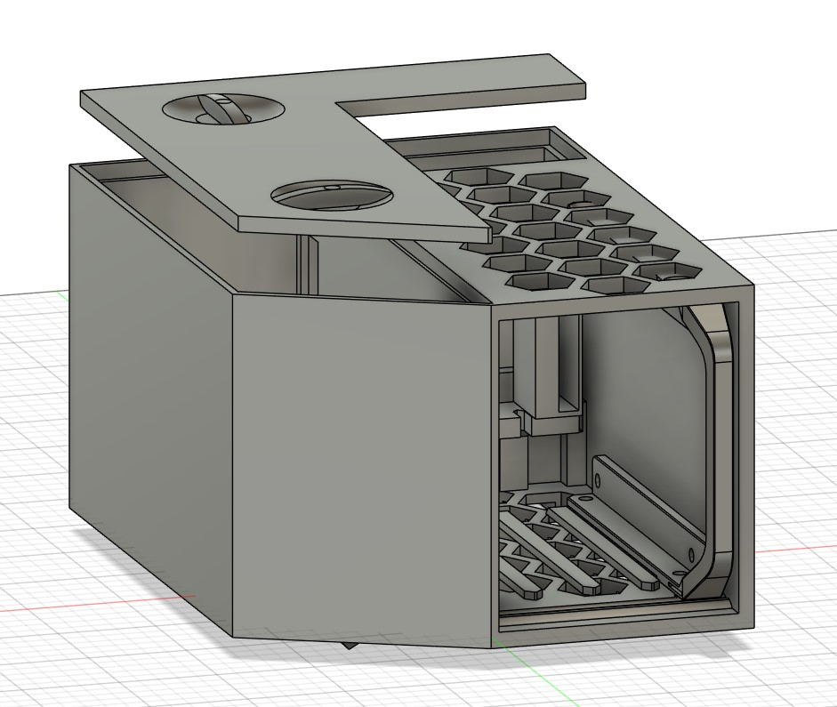
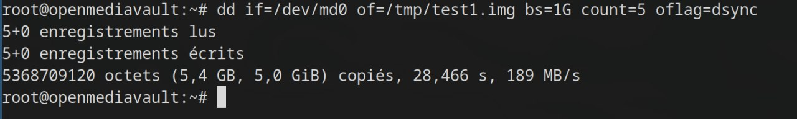
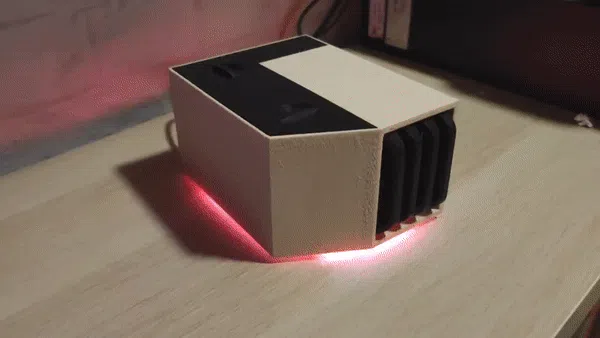

I’ve always wanted a NAS that can run multiple drives in RAID 5 to ensure data redundancy while being energy-efficient and consuming the least amount of power possible. While browsing the internet for the best processor with a satisfactory number of cores, I specifically looked for one that is energy-efficient and consumes minimal power. I came across the Intel N100 processor, which features 4 threads, a turbo boost up to 3.4 GHz, 6 MB of cache, and a low TDP of just 6 watts. Many companies produce mini PCs with these processors, and they are quite affordable, starting at around €100.
After acquiring one, I looked into the technologies and methods for connecting at least four drives to my mini PC. At first glance, there don’t seem to be many options for connecting multiple drives to the mini PC.
That's when I had the idea to use the USB 3.0 ports. Given the theoretical speed of 5 Gbps, it’s clear that my RAID 5 setup with 5400 RPM HDDs will never exceed this speed. So, I figured it was worth a try. While considering this setup, I encountered a problem: the PC’s 15W power supply isn’t capable of handling the load of four 2.5" drives. Each 2.5" HDD can consume up to 3W, which might seem minor, but it adds up. The PC’s power supply would be insufficient to support both the PC and the four HDDs simultaneously.
Sooo time for USB 3.0 powered HUB yayyy and 4 cheap USB 3.0 to sata (That can only handle the load of one 2.5" HDDs each.).
I also wanted to add LEDs underneath the case to create animations with a D1 mini running Wled . This would allow changing the animation when a backup is in progress or dimming the lights at certain times, like light night, to avoid disturbing sleep.
I then started working on the NAS enclosure on fusion360. I like the idea of having drive bays to make it easy to swap out disks. The design includes ventilation holes, a space to mount the USB hub, and compartments for managing the drive cables and LEDs. I found this model that I found interesting, so I kept the rack bay and modified it to accommodate four drives. 
I then 3D-printed the case parts in the most suitable orientation, including the four drive mounts and the cover. I also corrected a few dimensional issues during the process.

I then put everything together, connecting the four drives with their adapters to the powered USB hub. I also modified the USB hub to extract 12V from its PCB to power a DC-DC converter that steps down to 5V, which powers the D1 Mini controlling the LEDs
Apparently, TrueNAS handles USB-connected drives poorly, it has trouble retrieving the serial numbers, and it doesn't recognize the disks. So, I switched to OpenMediaVault, which works fine with USB drives. After installing OpenMediaVault on the mini PC, I discovered that everyone says it’s a terrible idea to build a NAS with USB-connected drives. Who could have seen that coming...
Even OpenMediaVault doesn’t support this setup, and it’s officially intentional. Despite this, I decided to move forward anyway. I set up the RAID array with mdadm and ran a speed test.
I noticed that the drives were very hot, around 60°C, and they were all vibrating, almost as if they were resonating together. So, I took them out of the enclosure, cooled them down with a fan, which brought their temperature down by 25°C, and then ran the speed test again. They no longer vibrated in resonance and were no longer hot to the touch. And I was really surprised by the results.
Unfortunately, even when I only put two drives back together, they became very hot again due to inadequate airflow, and their vibrations caused the performance to drop significantly.
I thought that the natural upward flow of warm air would be enough to cool the drives, but I’ll need to install a small 40mm fan like a dc4010 in the back to ensure proper cooling. I’ll connect it directly to 12V at the same point where I tapped to power the DC/DC converter
For the vibrations, I’m still unsure. I thought for a simple rubber dampeners but finaly i printed the hdd support in TPU
So there it is, my JBOD over USB. After a bunch of tests of read and write with the array, i finally decided to use it to store backups data. I do not advice anyone to reproduce this project to store important data. This is a Interresting project where I learn a bunch a things.
Today, I use my array daily to make backups of my laptop and to have a little cloud for my phone which automatically stores my photos and videos thanks to the Photosync application on my phone and the photoprims service which run over docker in the same machine of openmediavault.
The LED functionality is powered by a D1 Mini running WLED, providing dynamic and customizable lighting effects. A custom script managed by systemctl runs on the mini pc, monitoring the health of the RAID array every 10 seconds. If all the disks remain in the array, the LEDs operate in two distinct modes: a daytime mode with a pleasant and lively effect for visibility, and a nighttime mode with soft and calming effects to minimize disturbance. However, if any disk fails or drops from the array, the LEDs immediately switch to an alert mode, signaling the issue visually. This setup ensures both functionality and aesthetics while maintaining a responsive alert system. You can find the python code here 
For more information Find the project on : Maker world